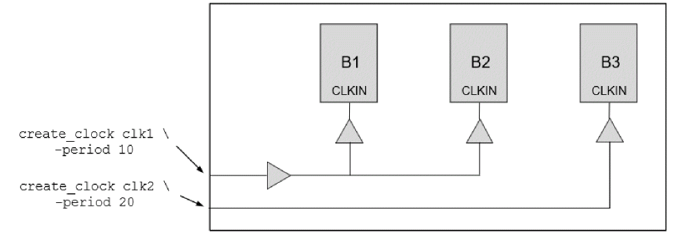
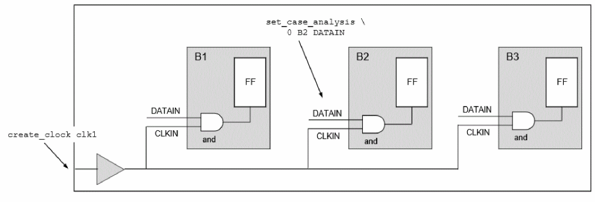

MIM Clusters
There are constraints requirements for instances of a module to qualify for MIM Context analysis. Tempus creates clusters of instances which meet the clustering requirements in Top STA and MIM context analysis can be performed only for those instances which are part of the same cluster.
The instances of a module in top STA should meet the following requirements to be clustered in MIM context analysis:
- All the instances of the block should have the same clock, clock waveform, and polarity at a given block port.
- Same constants should reach the ports across instances if the port's fanout is interacting with the clock network.
- All the instances should have the same top level clock constraints reaching the port (pin-based uncertainty, ideal vs propagated clock, etc.)
Tempus will write the multi_instance_cluster_info.rpt report file inside the context directory during context generation, which can be referred for details of clusters and instances associated with each cluster. This file has two sections - the first section gives information on instances belonging to different clusters, and the second section gives information on differences across clusters. The example below illustrate how to infer clustering information for a top level design TOP having three instances B1, B2, and B3 of module B.
Example 1: The following example illustrates the case where three instances of B do not meet requirement 1 of clustering and hence are made a part of separate clusters:

The MIM context analysis for interface paths is enabled by the timing_context_enable_mim_interface_support attribute. When set to true (default), the input and output interface paths are separately reported for each of the MIM instances.
The following are the contents of multi_instance_cluster_info.rpt file when the context is created for all the three instances of module B:
# Cluster definitions
cluster_1: Module: block Instances: {B1 B2}
cluster_2: Module: block Instances: {B3}
# Mismatch map
#Port | Cluster | MisMatch
CLKIN cluster_1 clocks: {clk1(P) view1} tags: {Propagated}
CLKIN cluster_2 clocks: {clk2(P) view1} tags: {Propagated}
The first section indicates that the two clusters are created for the block. The instances B1 and B2 are part of cluster_1 and instance B3 is part of cluster_2.
The second section indicates that the top level clock clk1 enters CLKIN port of instance(s) of cluster_1, whereas top level clock clk2 enters the CLKIN port of instance(s) of cluster_2. In this case, only instances B1 and B2 can be analyzed together in MIM context analysis.
Example 2: The following example illustrates a case where three instances of B do not meet requirement 2 of clustering and hence these are made a part of separate clusters. The clustering report in this case is the same as Example 1.
# Cluster definitions
cluster_1: Module: cppr_block Instances: {B1 B3}
cluster_2: Module: cppr_block Instances: {B2}
# Mismatch map
#Port | Cluster | MisMatch
CLKIN cluster_1 clocks:{ clk(P) view1 } tags:{Propagated}
In this case, the propagation of top level clock clk is stopped within B2 instance by applying constant 1 at the DATAIN port. Hence, the instance B2 is not a part of the same cluster as B1 or B3 instances. The instances B1 and B3 only can be analyzed together in MIM context analysis.

Return to top